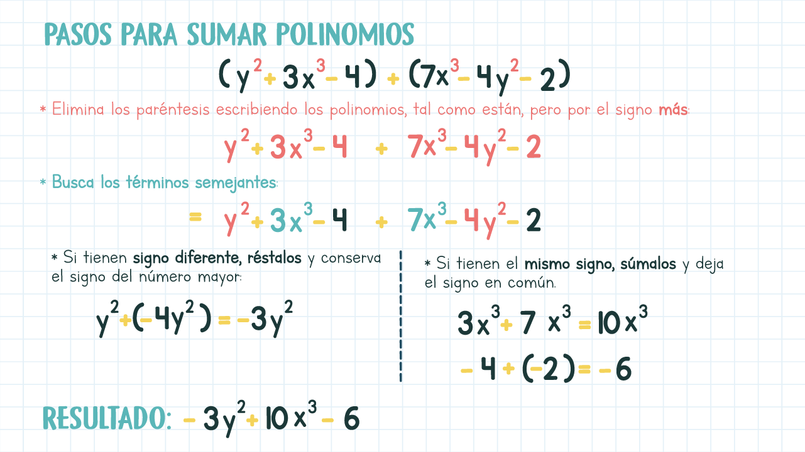
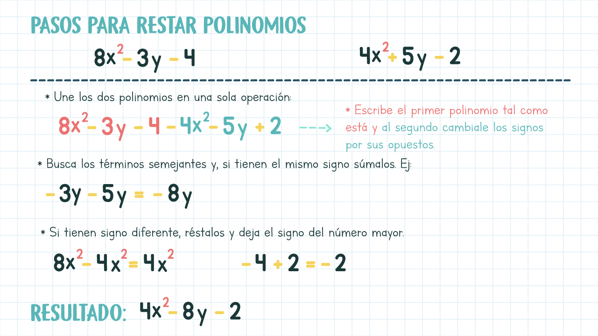
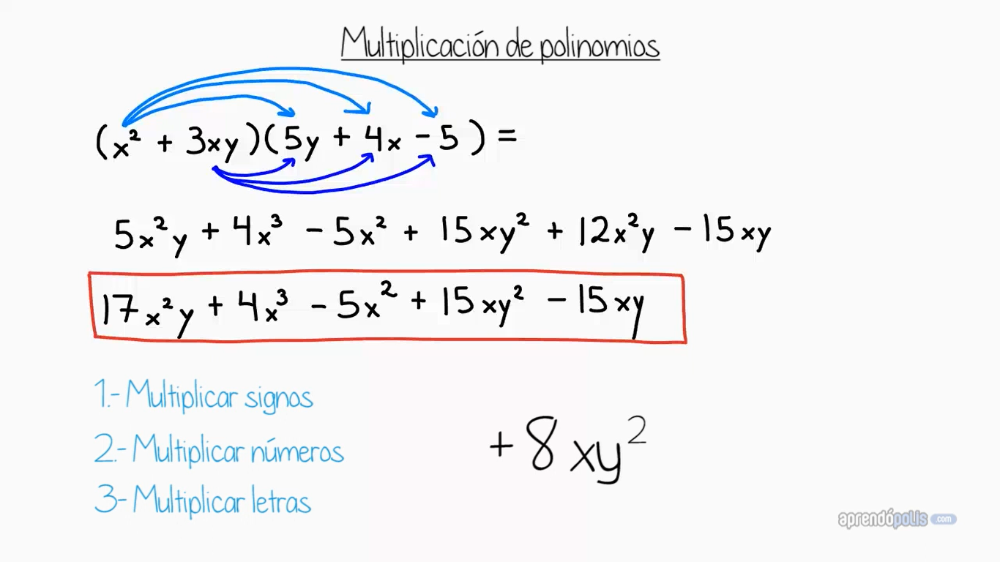
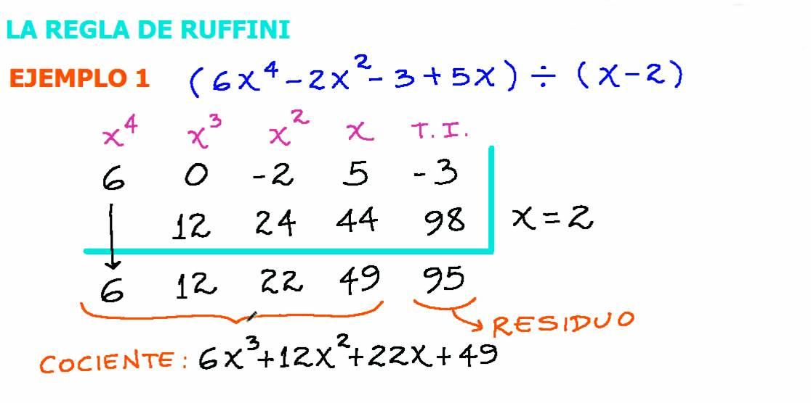

Operaciones con polinomios
En este apartado aprenderas como aplicar las cuatro operaciones basicas en los polinomios




- Paso 1: Asegúrate de que el divisor sea de la forma (x - a).
- Paso 2: Escribe los coeficientes del polinomio en orden descendente de grado.
- Si algún término falta, se debe poner un 0 en su lugar.
- Paso 3: Coloca el valor de "a" (recuerda que si el divisor es x - a, se coloca a; si es x + a, se coloca -a).
- Paso 4: Aplica la regla de Ruffini:
- Baja el primer coeficiente tal como está.
- Multiplica este valor por "a" y escribe el resultado debajo del segundo coeficiente.
- Suma verticalmente y repite el proceso con el nuevo resultado.